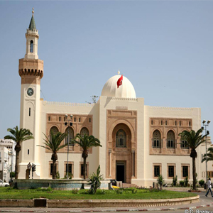
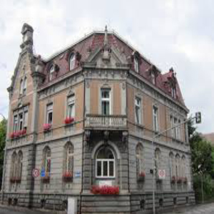

Studium

Gymnasuim
09-2014/10-2018Ich habe eine Abiturprüfung in der Mathematik Abteilung im Gymnasuim "Lycée Mahmoud-Magdich Sfax" mit guten Noten abgeschlossen und als nächstes bin ich nach Deutschland geflogen
Sprachkurs
02-2019/06-2019Mein erstes Deutsch-Kurs war im Carl –Duisberg-Centrum in Radolfzell , danach bin ich nach Kaiserslautern umgezogen und dort habe DSH-Vorbereitungskurs an der TUK besucht und mit DSH-2 als Ergebnis bestanden


Universität TU Kaiserslautern
MomentanIch mache derzeit einen Bachelor in Informatik an der Technischen Universität Kaiserslautern und bin in meinem zweiten Semester